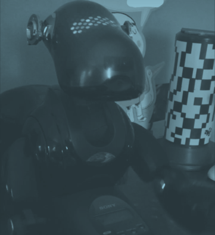
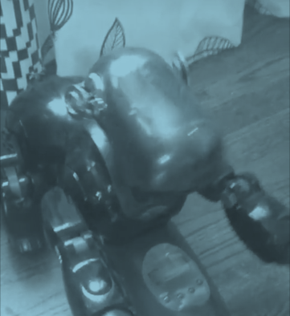

The robot above is named
Bruno-Bruno. And man, is he the most fun I have ever had in a long time.
The ERS-7 is a dream robot. One of the most important pieces of technology of our time. And here he is, sitting on my dresser.
Bruno isn't perfect. He is awfully dusty. He jams quite often. He doesn't boot completely well. He doesn't have ears or a tail. But man, is he entertaining!
He has little witty comments that make him so much more alive.
Bruno, are you hungry?
"I'm full, thank you!"
When I first booted him up, he had some problems. He was caked in dust and didn't want to do anything. He must have noticed.
"Are you okay? I'm going to show you a dance!"
People often compare their different models of AIBO together. At least between the ERS-210 and ERS-7... they feel like completely different robots. It's like night and day. They have their advantages and disadvantages, but I love both.
Now, for some pictures he took today.